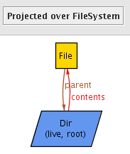
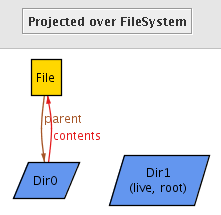
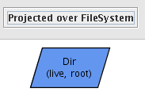
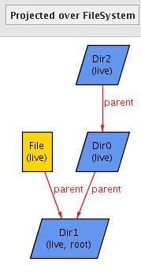

The model we developed in Lesson 2 still has some problems. For instance, the following file system is desperately in need of help:

The problem with this instance is that the File is reachable from the root, but is not considered to be a live object in the file system (it is not labeled 'live'). When we wrote
live in root.*contents
we ensured that all live objects in the file system are reachable from the root, but failed to guarantee that all objects reachable from the root are live. We should instead have written
live = root.*contents
After this change, the model may still generate erroneous solutions like this one:

Our previous problem is gone, but now there are stray tuples in the contents and parent relations. That is, the contents relation is defining relationships between file system objects which are not live in this file system. We can fix this by constraining all the tuples in the contents relation to be between objects that are live in this file system. Adding the following constraint to the appended fact achieves this
contents in live->live
Recall that an Alloy relation is just a set of tuples and also that the "->" operator denotes relational product. Thus live->live is a way of saying "a relation from live objects to live objects" or "all the 2-element tuples where both elements are live objects". This constraint says that the contents relation of a file system only maps between live objects of that file system.
The resulting bug-free model is shown in the upper-right frame. In the next lesson, we look at a different way to solve these same problems.
We can view samples solutions to the model by executing the run command. Since this is a run command, not a check command, solutions it generates are not counterexamples -- no claim has been made so there's nothing to disprove! If you execute the run command, you will probably get a trivial solution such as this one:

We can enforce some degree of non-triviality by changing the example predicate:
pred example {
all fs: FileSystem | #fs.live > 2
}
Now you'll get something that is pleasantly non-trivial. Initially, you will get an ugly mess of lines and nodes. We can clean this up by editing the customizations for the display:
Once you've made these changes, you can save the resulting customization by clickong Theme on the top menu bar (not the toolbar!) and click "save theme". For your convenience, we've created this theme file for you which you can download it here: filesystem.thm. Put this file in the same directory as your model. When you have a solution displayed, click Theme on to top menu bar (not the toolbar!) then click "load theme" to load this theme.
Now we may see a nice non-trivial example such as this one:
